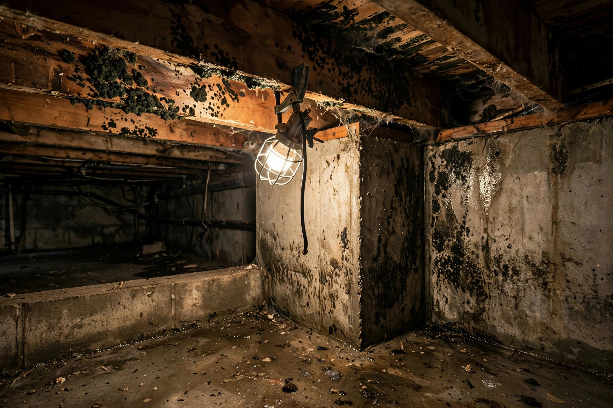
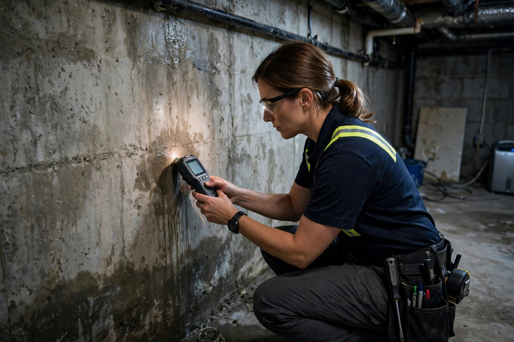
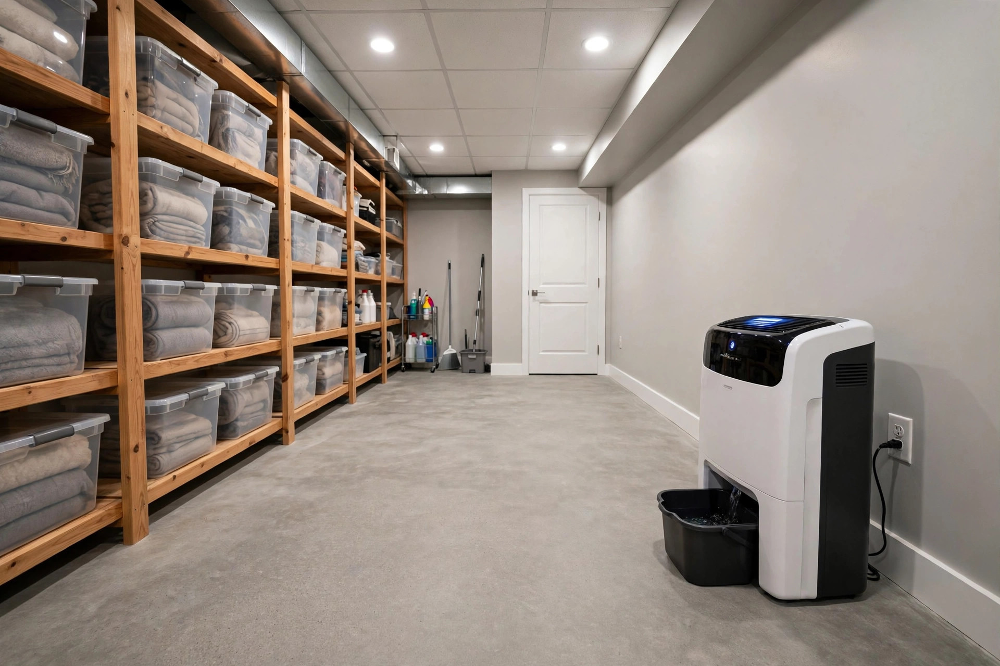

Home / Mold / Basement
Boise, Idaho · Below-grade specialistsBasement mold removal for Boise's below-grade homes
Foundation seepage, wicking, and trapped humidity — we remove the growth and trace the water back to its source.

Three basement situations we see most
Wall-floor joint seepage
Water enters where the wall meets the floor during irrigation season or heavy rain. Mold follows the damp line up the drywall.
Sweating walls in summer
Warm humid air hits cool below-grade walls and condenses. Bare concrete grows mold right on the surface within weeks.
Moisture wicking up drywall
Concrete wicks groundwater upward. Drywall touching the slab absorbs it, and the paper backing becomes mold food.
What we check before quoting
- Moisture readings on every below-grade wall, mapped room by room.
- Grading and gutter discharge — where does roof water actually go?
- Sump pit condition, pump operation, and discharge location.
- Foundation cracks, inside and out, with photos.
- Humidity logging over 48 hours when the source isn't obvious.

A Bench home with a damp carpet corner
Imagine a split-level on the Boise Bench where the lower-level carpet smells musty every August. The home sits a few blocks from the Boise River, and the water table rises in late summer. Moisture mapping shows the north foundation wall reading wet from floor to two feet up. The fix: remove the affected drywall and carpet pad, HEPA-clean the concrete, improve the gutter discharge on that side, and add a dehumidifier with a drain. For health background see EPA — Mold, Moisture & Your Home.
Boise basement realities
Local conditions that shape every basement job here:
Daylight basements on the Bench
Many Boise Bench homes have walk-out or daylight basements with one wall fully exposed. That wall behaves like an above-grade wall, while the other three act like a cave — two different moisture profiles in one room, and the mold usually picks the colder buried walls.
High water table near the Boise River
Homes within a few blocks of the Boise River sit over a high seasonal water table. In wet years the pressure pushes moisture through even intact concrete. These basements need active management — dehumidification and drainage — not just a one-time cleaning.
Basement mold questions
Why does my basement keep getting mold even after I clean it?
Because cleaning treats the symptom. Basements get mold from foundation seepage, high water tables, or humid air condensing on cool walls. Until the moisture path is found and managed, it returns.
Do I need a sump pump to keep my basement dry?
Not every basement does, but many Boise basements near canals or the river benefit from one. If you get water on the floor more than once a year, a sump with battery backup is worth discussing.
Can you remove mold from concrete walls?
Yes. Concrete is non-porous, so it HEPA-vacuums and cleans well. The key is finding why it got wet — grading, gutter, or groundwater — and fixing that alongside the cleaning.
Should I finish my basement if it's had mold?
Only after the moisture issue is resolved and verified dry through a full season. Finishing over an active seepage problem traps moisture behind new drywall and makes the next round worse.
How long does basement mold removal take?
A single wall is usually a day. A full basement with seepage issues can run three to five days including drying time. We won't rebuild until moisture readings hold at dry standard.
Keeping the basement dry long-term
Removal is half the job. These keep it dry:
- Extend downspouts at least 6 feet from the foundation.
- Grade soil away from the house — 6 inches of fall in the first 10 feet.
- Run a dehumidifier in summer, drained to a sink or sump, not a bucket.
- Don't store cardboard or fabric directly on basement floors.
- Test your sump pump every spring before irrigation season.
Boise basements live with seasonal moisture — irrigation summers and snowmelt springs. A dry basement isn't luck; it's drainage, grading, and humidity control working together. We set that up right, and we verify it with readings — not guesses.
